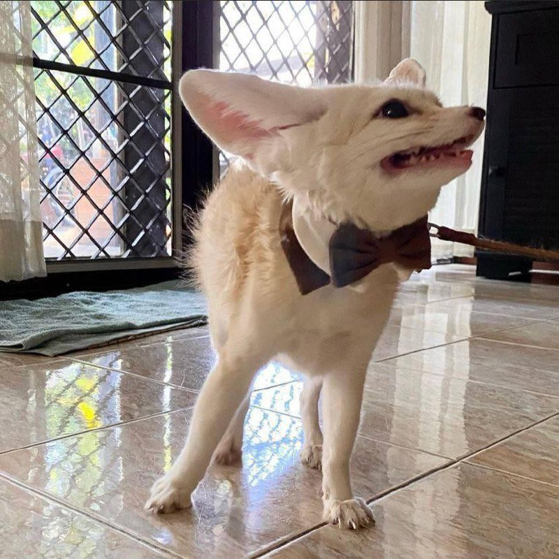
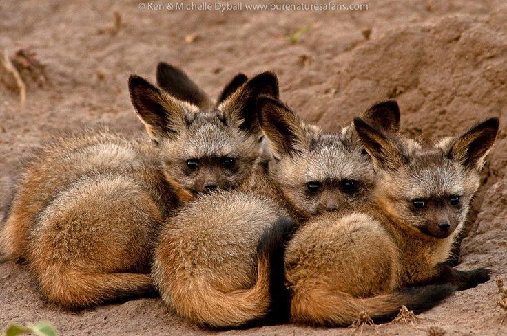
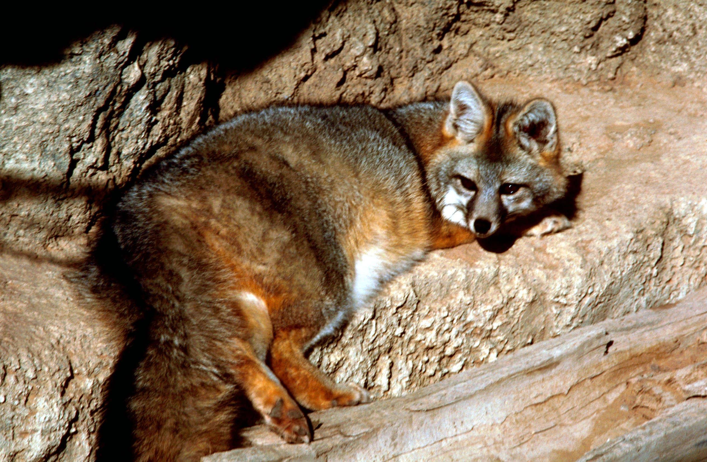

Los vulpinos (Vulpini) son una tribu de mamíferos carnívoros incluidos en la familia de los cánidos. Se conocen comúnmente como zorros o raposas
Actualmente están representados por unas 27 especies que se encuentran en casi todos los
continentes, aunque la más extendida es el zorro rojo o zorro común (Vulpes vulpes), que habita en
Europa y América del Norte. Otras especies importantes son el zorro gris, el zorro isleño y el zorro
polar, también conocido como «zorro ártico».
Los zorros viven en todos los continentes excepto en la Antártida. La especie de zorro más común y
extendida es el zorro rojo ('Vulpes vulpes) con unas 47 subespecies reconocidas. La distribución
mundial de los zorros, junto con su extendida fama de astutos, ha contribuido a su prominencia en la
cultura popular y el folclore de muchas sociedades de todo el mundo. La caza de zorros con jaurías de
sabuesos, una actividad establecida desde hace mucho tiempo en Europa, especialmente en las Islas
Británicas, fue exportada por los colonos europeos a varias partes del Nuevo Mundo.
La mayoría de los zorros viven entre 5 a 7 años en libertad, aunque pueden llegar a alcanzar los 12 o
incluso sobrepasar esa edad en cautiverio. Son generalmente más pequeños que otros miembros de la
familia Canidae, tales como; lobos, chacales y perros domésticos. Sus rasgos típicos incluyen un fino
hocico y una espesa cola. Otras características físicas varían según su hábitat. Por ejemplo, el zorro del
desierto tiene largas orejas y pelaje corto, mientras que el zorro ártico tiene pequeñas orejas y un denso pelaje.
Se incluye en zorros a los siguientes generos: